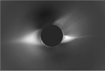
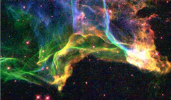
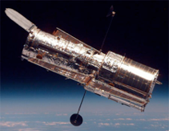
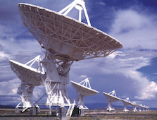
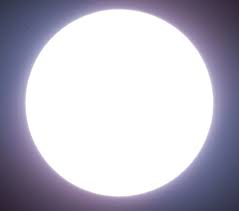
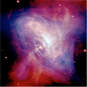
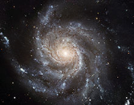
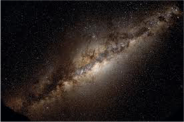
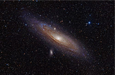

What You Should Know - Observing With NASA: Astronomy
 Important Vocabulary
Important Vocabulary
- Astronomical Object - something natural that is normally found in outer space (example: stars, moons, and asteroids)
- Field of View - the area you can see, for this activity it refers to how much of the sky will be in the photo
- Exposure Time - is the length of time the telescope's camera will be opened to collect light from the object (bright objects like the moon take less time, dimmer objects like galaxies need more time)
- Filter Selection - used to reduce or change the light, reduce reflection, fuzziness, and other features that make it harder to study visual details
What Is Astronomy?
Text: Astronomy is the study of objects in space. Objects outside the atmosphere include moons, planets, stars, solar systems, galaxies, and more.

Solar eclipse (Source: National Center for Atmospheric Research's High Altitude Observatory)

The Cygnus Loop (Source: Jeff Hester, Arizona State University and NASA)
Astronomy is one of the oldest sciences. Even in ancient times, people would study the stars and skies. Ancient astronomers could only observe with their eyes, but scientists can now use telescopes to observe far-away objects. One very famous example is the Hubble Telescope, which has captured some of the most detailed photographs of the visible universe. The James Webb Telescope was launched in December 2021. It is the most powerful telescope that was ever launched into space and it will be able to view objects that are even older, farther away and less distinct than the Hubble.
An astronomical object is something natural that is normally found in outer space.
Stars, moons, and asteroids are examples of astronomical objects. Satellites and moon rovers are not astronomical objects because they are created and put into space by people.
Robotic Telescopes
Not all telescopes have to be controlled directly by human hands
MicroObservatory is a network of telescopes all over America that you can control over the internet. MicroObservatory telescopes are called robotic telescopes because they use computers and machines, not humans, to point the telescope in the right direction and take pictures.
How Do Telescopes Work?
Telescopes help us see objects that are far away. Early telescopes collected light from distant objects and used glass lenses in a tube to focus that light at our eye.
Modern telescopes have unique uses and collect other signals besides light we can see. There are many types of telescopes – each developed from the original models.

Hubble Telescope

Very Large Array (VLA)
Reflecting telescopes use mirrors instead of lenses to concentrate and focus light.
Radio, microwave, and X-ray telescopes help astronomers observe objects that give off energy that cannot be seen with our eyes.
Space telescopes are placed beyond the Earth’s atmosphere where they have a clearer view of the universe.

Overexposed picture of the Sun with no interesting details(Source: Celestial Photographs)
Observing with NASA gives you different options for controlling telescope camera settings to improve your pictures, including field of view, exposure time, and filter selection.
What Can You Photograph?
With Observing with NASA, you can look at pictures of the moon, the sun, and planets in our solar system. You can even take your own photos of the moon, sun, stars, and even objects that are much farther away including distant stars, nebulae, and galaxies.
Nebulae are clouds of gas and dust. They can be formed by gravity or other forces causing dust and gas to come together, sometimes creating new stars. Nebulae can also be formed when stars explode, scattering dust and gas far into space.
Galaxies are huge systems of stars and other matter held together by gravity.
We live in a spiral-shaped galaxy called the Milky Way. The Sun is one of around 100-400 billion stars in the Milky Way galaxy, and scientists believe that there are over 170 billion galaxies in the universe.

The Crab Nebula

Pinwheel Galaxy, example of a spiral galaxy like the Milky Way Galaxy

The Milky Way Galaxy as seen from Earth

Light from the Andromeda Galaxy (our nearest galaxy) takes 2.5 million years to reach us. Light from the Sun takes just 8 minutes!